Ders 13
Lagrange Çarpanları (Multipliers)
Amaç yine $f(x,y,z)$ gibi birden fazla değişken içeren bir fonksiyonu maksimize etmek, değişik olan, $x,y,z$ değişkenlerinin birbirinden bağımsız olmaması. Bu değişkenlerin arasındaki ilişki $g(x,y,z)=c$ gibi bir fonksiyon tarafından gösteriliyor olabilir, $c$ bir sabittir. Yani $f(x,y,z)$'i minimize ya da maksimize ediyoruz ve bunu sadece $g(x,y,z)=c$ şartına / sınırlama ifadesine (constraint) uyan $x,y,z$ değerleri için yapıyoruz.
Bunun için hangi tekniği kullanırız? Yollardan biri, eğer sınırlama ifadesi basit ise, belki bir değişkeni cebirsel olarak çözmek (diğerleri bağlamında ifade ederek), sonra geri $f$'e sokarız, böylece klasik bir min / maks problemi elde ederiz, ki o tür bir problemi çözmeyi artık biliyoruz.
Fakat bazen $x,y,z$ değişkenleri için analitik çözüm mümkün olmaz, o zaman farklı teknikler kullanmamız gerekir. Bu derste öğreneceğimiz teknikler bunlar olacak.
Uygulama bağlamında, Lagrange Çarpanları bizi niye ilgilendiriyor? Belki fizik, termodinamik dersinde görmüşsünüzdür, sıcaklık, hacim ve basınç değerleri vardır, ve bu değerler birbirinden bağımsız değildir. Termodinamikte $PV=nRT$ denklemi vardır, gerçi burada analitik olarak basitleştirme yapabilirdik, ama bazı şartlarda tüm değişkenleri olduğu gibi tutmayı isteyebiliriz.
Şimdiye kadar min / maks problemleri için gördüğümüz kritik nokta bulma tekniklerinin burada ise yarayamacağını hemen belirtelim. O kritik noktalar $g(x,y,z)=c$ sınırlama ifadesini tatmin etmiyor olabilirler. Başka bir şeye ihtiyacımız var.
Örnek
Hiperbol $xy =3$ üzerinde olan ve orijine en yakın noktayı bul.
Aslında bu soruyu temel geometri kullanarak çözebiliriz, fakat burada Lagrange Çarpanları kullanarak çözeceğiz, çünkü iyi bir örnek.
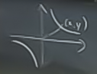
Neyi minimize edelim? Mesela $f(x,y) = \sqrt{x^2 + y^2}$ olur mu? Olabilir, ama karekök ifadesinden kurtulursak daha iyi olur.
O zaman
$$ min \ f(x,y) = x^2 + y^2 $$
$$ ki, \ xy = 3 $$
Yani sınırlama ifadesini $g(x,y) = xy$ olarak seçtik.
Grafiğe bakalım. Yuvarlaklar $f(x,y)$ konturları, yeşil okla gösterilen mesela $f(x,y) = 20$ konturu. Bu kontur üst sağ köşe ve sol alt köşede gösterilen hiperbolu kesiyor mu? Evet. Fakat $f(x,y) = 10$, vs. diyerek daha küçük yuvarlaklar elde edebilir miyim? Evet. Fakat bir noktadan sonra bu halkalar hiperbolu kesmeyecektir.
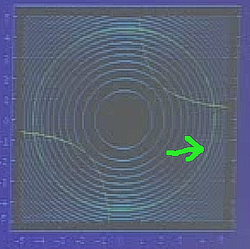
Aradığımız $x,y$ değerleri hiperbole teğet olan, olabilecek en küçük yuvarlak.
Çözüm için teğetlik kavramından faydalanabiliriz. Eğer olabilecek en minimal $f$, her iki fonksiyonun kesit eğrilerinin teğet olduğu noktada ise, bu noktayı bulmaya uğraşabilirim.
İki kesit eğrisi birbirine teğet ise, onların teğet düzlemi paraleldir, eğer öyleyse, bu düzlemlerin normalleri birbirine paralel olmalıdır.
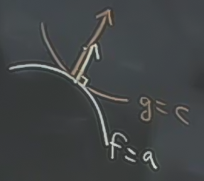
Bu normallerin aynı boyda olması gerekmez, yukarıdaki gibi, ama paralel olmaları gerekir. Bu durumda
$$ \nabla f // \nabla g $$
ifadesi doğru olmalıdır, yani $f$'in gradyanı $g$'nin gradyanına paraleldir. Bazı örnekler [hocanın kullandığı program mouse ile tıklanan yerde (mavi nokta) her iki fonksiyonun gradyanını hemen grafikliyebiliyor, alttaki resimler birkaç örnek noktada yapılan tıklamalar].
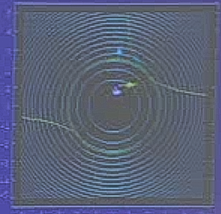
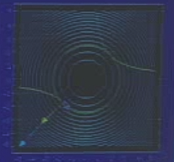
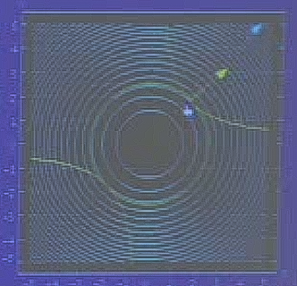
Görüldüğü gibi minimal noktaların birinde (üstteki son resim) gradyanlar paralel.
Cebirsel olarak düşünürsek: vektörler ne zaman birbirine paralel olur? Birbirlerinin katı oldukları zaman. Yani şu şekilde bir ifadeyi yazabildiğimiz zaman
$$ \nabla f = \lambda \nabla g $$
ki $\lambda$ bir sabit.
Gradyanlar aynı çizgide olup tam zıt yönü gösteriyor olabilir, bu durumu $\lambda$'nin negatif olup olmaması halledecektir.
Yani aradığımız $xy$ üzerinde sayısal değer $\lambda$ üzerinden $\nabla f = \lambda \nabla g $ ifadesinin doğru olduğu bir nokta, ve $\lambda$ değerini arıyoruz (unutmayalım, gradyanlar belli $x,y$ değerleri üzerinde alınır). Yani 2 değişken içeren sınırlama ifadesi $g(x,y)=c$ içeren bir min / maks problemi yerine, bir denklem sistemi geçiriyoruz. Bu sistem nedir? Üstteki gradyan formülüdür, o da şu sisteme dönüşür:
$$ f_x = \lambda g_x $$
$$ f_y = \lambda g_y $$
Öyle değil mi? Çünkü $\nabla f$ ve $\nabla g$ birer vektördür,
$$ \nabla f = \left[\begin{array}{r} f_x \\ f_y \end{array}\right], \ \ \nabla g = \left[\begin{array}{r} g_x \\ g_y \end{array}\right] $$
O zaman iki üstteki denklem sistemi şuradan ileri gelmektedir
$$ \left[\begin{array}{r} f_x \\ f_y \end{array}\right] = \lambda \left[\begin{array}{r} g_x \\ g_y \end{array}\right] $$
Fakat hala eksik bir şey var. Elimizde $x,y,\lambda$ bilinmeyenleri var, ama sadece iki tane formül var. Eksik olan $g(x,y) = c$, çünkü $x,y$ birbirinden bağımsız değil ve $g$ üzerinden bağlantılılar. Şimdi oldu. 3 formül şöyle:
$$ f_x = \lambda g_x $$
$$ f_y = \lambda g_y $$
$$ g(x,y) = c $$
Örneğimiz
$$ f(x,y) = x^2 + y^2 $$
$$ g(x,y) = xy $$
üzerinde uygularsak
$$ 2x = \lambda y $$
$$ 2y = \lambda x $$
$$ xy = 3 $$
Bu sistemi çözmemiz gerekiyor. Yanlız şunu söyleyelim, bu sistemi çözmenin genel (hep işleyen) bir yöntemi yoktur. Çözüm bazen çok basittir, bazen zordur, bazen sadece sayısal / hesapsal açıdan çözülebilir (bilgisayar ile). Bu örnekte kolay.
$$ 2x - \lambda y = 0$$
$$ 2y - \lambda x = 0 $$
$$ xy = 3 $$
Matris formuna koyarsak
$$ \left[\begin{array}{rr} 2 & -\lambda \\ \lambda & -2 \end{array}\right] \left[\begin{array}{r} x \\ y \end{array}\right] = \left[\begin{array}{r} 0 \\ 0 \end{array}\right] $$
En basit çözüm $x=0,y=0$ sınırlama ifadesi $xy=3$'u çözmez. Diğer çözüm ne zaman ortaya çıkar? Eğer matrisin determinantı sıfır ise.
$$ \left|\begin{array}{rr} 2 & -\lambda \\ \lambda & -2 \end{array}\right| = -4 + \lambda^2 = 0 $$
$$ <=> \lambda^2 = 4 $$
$$ <=> \lambda = \pm 2 $$
Elimizde iki durum var. $\lambda$ ya 2, ya da -2.
1) $\lambda = 2$ durumunda
$$ x = y $$
$$ x^2 = 3 $$
O zaman
$(x,y)$ = $(\sqrt{3}, \sqrt{3})$ ya da $(-\sqrt{3}, -\sqrt{3})$
2) $\lambda = -2$ durumunda
$$ x = -y $$
$$ -x^2 = 3 $$
Bu durumda çözüm yoktur (karesi alınıp eksi ile çarpılan hiçbir sayı 3 sonucunu vermez).
Üstteki son iki resime bakınca, $\lambda = 2$'nin doğru olduğunu görüyoruz, çözüm olan iki noktada bir gradyan ötekinin hakikaten tam iki katı.
Bu metot niye işledi? Grafiklere baktık, teğetlik olduğunu gördük, fakat bunun niye kesinlikle böyle olması gerektiğini söylemedik.
Kısıtlı ifade gözönüne alınınca ele geçecek bir min / maks noktasında ve $g = c$ kesit eğrisi boyunca, $f$'in değişim oranı $=0$ olmalıdır.
Şimdi aynı şeyi yönsel türev kullanarak söyleyelim.
$g=c$'e teğet olan her $\hat{u}$ için $df / ds_{|\hat{u}} = 0$ olmalı.
Yani şu resme bakarsak
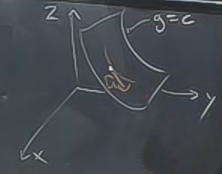
Kesit yüzeyi (ki orada $g=c$) üzerindeki nokta ve o yüzeye teğet olan yön $\hat{u}$ yönünde $f$'in değişimi sıfırdır.
$df / ds_{|\hat{u}}$ formülünün $\nabla f \cdot \hat{u}$ formülüne eşit olduğunu biliyoruz.
O zaman teğet olan her $\hat{u}$, $\nabla f$'e dik olmalıdır, yani $\hat{u} \perp \nabla f$.
O zaman $\nabla f$, $g$'nin kesit seviyelerine diktir.
$g$'nin kesit seviyelerine dik bir başka vektör daha biliyoruz, o da $g$'nin kendi gradyanı, yani $\nabla g$.
O zaman $\nabla f // \nabla g$ olmalıdır çünkü her iki gradyan da $g$'nin kesit seviyelerine aynı anda diktir.
Tekrar edelim. Sınırlanmış min, maks noktasında $g$ kesit seviyesi üzerinde ilerliyorsak, $f$'in (en azından birinci derecedeki yaklaşıksallamasındaki) değişimi sıfırdır, yani $g=c$'ye teğet yöndeki herhangi bir $f$ türevi sıfır olmalı. Min, maks olmak bu demek. O zaman $g=c$'ye teğet olan herhangi bir $\hat{u}$, $f$'in gradyanı $\nabla f$'e dik olmalıdır, ve bu da $\nabla f$, $g$'nin kesit seviyesine dik demektir.
Yani resimde gördüğümüz tekrar söylemiş oluyoruz. Her iki kesit seviyesi kısıtlanmış mın / maks noktasında birbirine teğet olmalı.
UYARI
Bu metot bir çözümün min mi, maks mi olduğunu söylemez.
Kötü haber: 2. türev testini kullanamayız.
Ne yapabiliriz? Elde edilen noktaları $f$'e verip sonuca teker teker bakarız, birbirleri ile karşılaştırız. Mesela üstteki örnekten elde ettiğimiz değerler minimum'dur, maks bu problemde sonsuzluktadır.
Zor Örnek
Diyelim ki bir piramit inşa etmek istiyoruz, hacim ve üçgensel taban bize veriliyor. Amaç, tüm dış yüzey alanını minimize etmek.
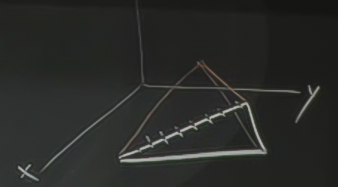
Çözüm için bulmamız gereken piramidin en üst noktası. Değişik yerlerde olabilecek, ve nerede olduğuna göre hacimin, alanın değişebileceği elimizdeki ayar noktası orası. Hacim formülü
Hacim = $\frac{1}{3}$ Baz alanı $\times$ yükseklik
Hacmi ve baz alanı sabitlediysek, o zaman formülde geri kalan yükseklik te sabitlenmiş demektir. Minimize ederken onun üzerinde oynayamayız. O zaman üst nokta sadece xy düzlemine paralel olarak sağa, sola, ileri, geri, vs. şeklinde yer değiştirebilir, aşağı, yukarı çıkamaz.
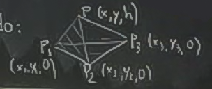
Eğer kordinatları üstteki gibi ortaya çıkartsak, ele geçen tüm üçgenlerin alan hesabını vektör çapraz çarpımı ile hesaplamayı biliyoruz, onların toplamını elde etmeye uğraşabilirdik, vs. Fakat üstteki yöntem işleri daha fazla karıştırıyor. Kordinatları daha iyi temsil edecek bir yöntem gerekiyor bize.
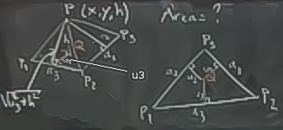
Temsili üstteki gibi yapalım, resimde sağda olan şekil piramidin kuşbakışı görüntüsü. Piramit tabanında bir $Q$ noktası hayal edelim, $P_1$ ve $P_2$ arasından $Q$'ye giden uzaklık $u_3$ [resimde iyi çıkmadı, biz ekledik], yüksekliği zaten biliyoruz, $h$. O zaman piramit kenarında ona tekabül eden yükseklik $\sqrt{u_3^2 + h^2}$.
$$ \textrm{Kenar alanı } = \frac{1}{2}a_1 \sqrt{u_1^2 + h^2} + \frac{1}{2}a_2 \sqrt{u_2^2 + h^2} + \frac{1}{2}a_3 \sqrt{u_3^2 + h^2} $$
Bu 3 değişken içeren bir fonksiyon, $f(u_1,u_2,u_3)$.
Üç değişkeni birbiri ile nasıl ilişkilendiririz? Çünkü büyük bir ihtimalle bunlar bağımsız değişkenler değiller.
Eğer üst resimdeki sağ şekle bakarsak, ve baz alanını üç parçaya bölersek, elde ettiğimiz
$$ \textrm{Baz alanı} =
\frac{1}{2}a_1u_1 +
\frac{1}{2}a_2u_2 +
\frac{1}{2}a_3u_3
$$
formülüdür. Bu formül kısıtlama ifadem, yani bu problemin $g$'sı. Kenar alanı formülü de $f$'im.
Lagrange
$$ \nabla f = \lambda \nabla g $$
$$ \frac{\partial f}{\partial u_1} = \frac{1}{2}a_1 \frac{u_1}{\sqrt{u_1^2 + h^2}} = \lambda \frac{1}{2}a_1 $$
$1/2a_1$'ler iptal olur
$$ \frac{\partial f}{\partial u_1} = \frac{u_1}{\sqrt{u_1^2 + h^2}} = \lambda $$
Diğerleri benzer şekilde
$$ \frac{\partial f}{\partial u_2} = \frac{u_2}{\sqrt{u_2^2 + h^2}} = \lambda $$
$$ \frac{\partial f}{\partial u_3} = \frac{u_3}{\sqrt{u_3^2 + h^2}} = \lambda $$
Son üç formülün üçü de $\lambda$'ya eşit, o zaman üç formül birbirine eşit. Bu mantığı izlersek, $u_1 = u_2 = u_3$ olması gerektiği sonucuna da varırız.
O zaman $Q$ noktası her kenardan eşit uzaklıkta, tam ortada olmalı.
Soru
Bir dikdörtgensel kutu birinci oktan (octant) içine konuyor, ki kutunun $Q$ köşesi tam orijinde, onun köşegen olarak tam zıttında duran $P$ noktası ise $f(x,y,z)=c$ gibi bir yüzeye dokunuyor. Lagrange Çarpanları tekniğini kullanarak hangi $P$ noktası için bu kutunun en büyük hacime sahip olacağını hesaplayın, ve hesabınızın bir maksimum nokta ortaya çıkartıp çıkarmadığını nasıl bildiğinizi ortaya koyun.
Oktan kavramı alttaki şekilde gösteriliyor, Latin "octo" bilindiği gibi "sekiz" anlamına geliyor, ki alttaki 3D kordinat sistemi 8 parçaya bölünmüş. 1. oktan tüm işaretlerin, yani $x,y,z$'nin hepsinin + olduğu bölge.
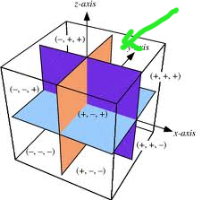
Cevap
a) $f(x,y,z) = x + 2y + 3z = 18$
$$ \nabla (xyz) = \lambda \cdot \nabla f(x,y,z) $$
$$ yz = \lambda, \ xz = 2\lambda, \ xy = 3\lambda $$
Bu formülleri aynı anda çözmek için üstteki üç denklemi sırasıyla $x,y,z$ ile çarparız böylece sol tarafı aynı olan üç tane denklem elde etmiş oluruz.
$$ xyz = \lambda x $$
$$ xyz = 2 \lambda y $$
$$ xyz = 3 \lambda z $$
Böylece üç denklemin sağ tarafı artık birbirine eşittir.
$$ x = 2y = 3z $$
Daha önceden biliyoruz ki
$$ x + 2y + 3z = 18 $$
Birbirine eşit üç şeyin toplamı $18$ ise, o şeylerin her birinin büyüklüğü $6$ demektir, yani
$$ x = 2y = 3z = 6$$
Buradan $x,y,z$ teker teker bulunabilir,
$$ x = 6, y=3, z= 2 $$
Bu bir maksimumdur çünkü 1. oktanda kalıp olabileceğimiz en küçük değer $x,y,z$ sıfır olduğu, yani orijinde olduğu zamandır. Bu noktalar orjinden büyük değerler.